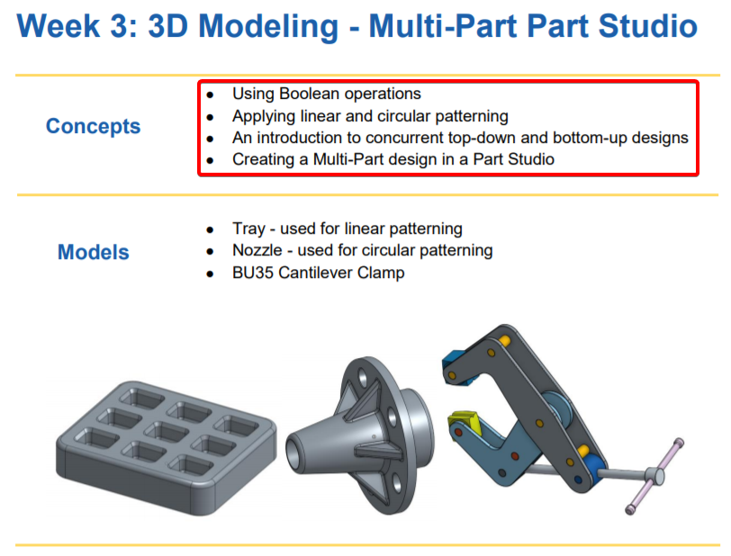
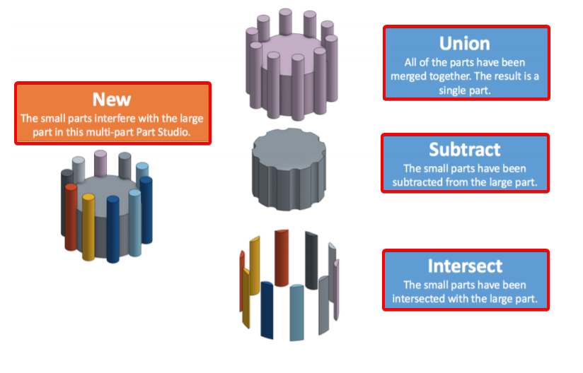

3D建模 - 多部分的零件

Boolean只在互相干擾或只是接觸時才有用

New : 小零件會干擾這個多實體中的大零件
Union : 全部的零件都合併在一起. 結果是一個單一零件.
Subtract : 小零件已從大零件中減去
Intersect : 小零件與大零件相交
Part Studios
Part Studios are where you create and modify geometry. Unlike other CAD systems, you may make as many parts in a single Part Studio as you want. This technique is called Multi-Part Modeling and it’s very powerful because, as we’ve seen, you can make parts that highly depend on one another.
In Onshape, Multi-Part Modeling allows the designer to create a single sketch which can create multiple parts, and a single feature can affect multiple parts at the same time. This is different from traditional CAD applications.
Assemblies
Assemblies are where you take the parts that you’ve already made and put them together to make something bigger. You use things called Mates(配合) to position the parts where you want and to define movement.In other words, assemblies are where you assemble parts and view how they move.We’ll talk more about this later, but assemblies are also where you would instance a part(use the same part multiple times). Lastly, assemblies often experience faster performance of big, complex assemblies as compared to having a single Part Studio with the same number of parts.
Bottom-Up Design
Bottom-Up Design is when a product is designed by creating sketches, then features, then parts (often one per Part Studio), and then assemblies. In this approach, the geometry is created starting with the lower level entities (like 2D lines and circles) up the hierarchy to the highest level assembly (such as the final product being built).
Top-Down Design
Top-Down Design is when the shape of an overall product is sketched first, and then different regions of that sketch are used to create the lower level parts and their features. Top-Down is a more intuitive(直觀的) way to approach a design because typically we, as designers, envision(設想) the final product first, then as time goes on, we refine the concept into finer and finer detail.
A. Use both a circular pattern (8 X 360°) and a Linear Pattern (3 X 2”) to create the
following geometry:
B. Starting with the two sketches provided, create the following backyard grill grate(格柵), with 1” gaps, using the following three methods (extrude them up to the outer ring)
*Sketch pattern the grill grate cross-section
*Feature pattern the grill grate extrudes (try doing it with a single pattern!)
*Part pattern the grill grates (use booleans to “trim” the grates using the outer ring)
What are the pros and cons(利弊) of each method?
C. Create this multi-part ball bearing(滾珠軸承) design, starting with nothing but the provided sketch, highlighted in orange. Don’t forget the 0.1” fillets at the end!
D. Create the following screwdriver(螺絲起子) model, given the existing sketches, and using the following workflow(工作流程)
*Revolve the Driver(螺絲刀), Handle(手柄), and Grip(把手) parts from the initial Profile sketch.
*Revolve the Bump(凹凸) Profile as a new part
*Circular Pattern the Bump Profile (6X)
*Boolean Union the Bump Profiles to the Grip Part
*Boolean Subtract the Handle from the Grip
*Sweep remove the Driver tip given the Profile & Path sketches.
*Circular pattern the Driver tip geometry (4X)
Q : What are the 3 types of Boolean Operations and how do they work? Feel free to draw pictures if they help.
A : Add/Union - A single Part is created from multiple, overlapping(重疊) “Tools”.
Subtract - “Tools” are used to remove material(材料) from “Targets”.
Intersect - The overlapped volumes are created by multiple, overlapping “Tools”
Q : What is the main difference between a Linear and a Circular Part pattern?
A : A Linear pattern creates parts along a straight linear reference(參考), a circular pattern creates parts around an axis reference.
Q : When might you use a Part Pattern versus(與) a Feature Pattern?
A : A Part Pattern patterns(模擬) an individual part while a Feature Pattern patterns a specific feature (or features) listed in the Feature Tree, such as extrude, fillet, sweep, and sketch.
Q : Describe in your own words what “Top-Down Design” means.
A : Top-Down Design is when the shape of an overall(整體) product is sketched first, and then different regions of that sketch are used to create the lower level parts and their features.
Q : Why is it smart to put fillets and chamfers at the end of the feature list?
A : Because they are not critical(緊要) features, and having them too early in the model, could result in accidentally(意外地) referencing them while creating critical geometry.
Q : How is the mirror tool being utilized in the creation of our Clamp design?
A : We are using it to save time by only modeling half of our pins and hinges(絞鏈), and then mirroring them over the symmetry plane(對稱平面).